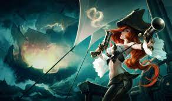
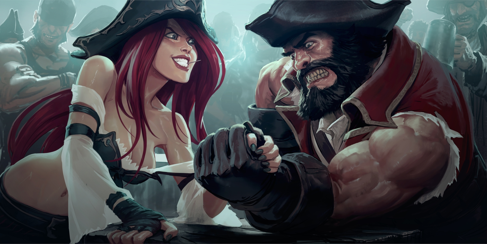
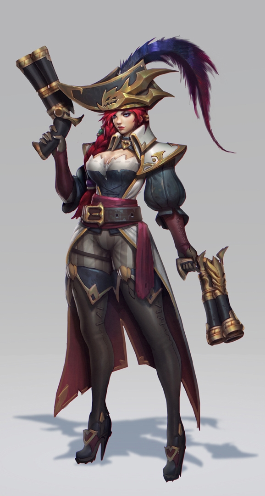

Sorti en 2009, League of Legends est un jeu gratuit sur le modèle de ce qu’on appelle les free-to-play. Comprenez qu’il est possible de jouer à LoL sans débourser un centime, mais que les occasions de dépenser de l’argent pour agrémenter ses parties peuvent être nombreuses en cours de partie.
La quasi-totalité des modes de jeu opposent deux équipes de cinq joueurs. Certains d’entre eux proposant des parties en un contre un ou deux contre deux font aussi parfois leur apparition. Une façon pour les développeurs du jeu de tester de nouvelles options mais aussi de permettre aux joueurs de varier les plaisirs.
League of Legends prend place dans un univers fantastique dense et très varié. Inspiré par l’heroic fantasy, il offre aux joueurs la possibilité d’incarner des champions (les légendes) hauts en couleur répartis dans six classes : tanks (des héros défensifs), combattants, mages, assassins, tireurs et supports. Chaque classe et chaque personnage bénéficient évidemment de leurs propres pouvoirs et attributs. Le joueur choisit son personnage parmi les 150 héros disponibles, qui dispose chacun de son histoire, en fonction de son style de jeu mais aussi de la composition de l’équipe, veillant à ce que cette dernière reste équilibrée. De nouveaux champions sont régulièrement proposés. Lors de chaque partie, le joueur dirige son personnage et doit enchaîner coups et sortilèges afin de prendre l’ascendant sur l’équipe adverse. En fonction de son rôle et de ses pouvoirs, il doit aider au mieux sa propre équipe car la coopération est essentielle pour espérer l’emporter. Il est donc aussi important de pouvoir communiquer (souvent par l’intermédiaire d’un micro-casque) avec ses compagnons d’aventure.
Dans LoL, l’ADC (Attack Damage Carry), ou AD Carry, est un terme qui fait référence aux champions qui font des dégâts importants et continus aux adversaires grâce à leurs attaques de base, et qui ont des stats centrées sur l’attaque et les dégâts physiques. En résumé, ce sont des champions qui peuvent infliger des dégâts particulièrement élevés aux adversaires mais qui, d’un autre côté, sont assez faibles et ne peuvent pas encaisser énormément de coups. Ton but en tant qu’ADC est donc principalement de survivre le plus longtemps possible. Pour cela, tu vas devoir apprendre à connaître les autres champions et savoir parfaitement doser les attaques, les spells et le retrait pour te régénérer avant d’y retourner, afin d’être certain de ne pas te faire éliminer par un laner ennemi. Les déplacements sont très importants dans LoL pour l’ADC et tout doit être calculé pour ne pas se faire tuer avant même le début du combat.
Comme bon nombre de ceux qui sont sortis de l'anonymat du labyrinthe saumâtre qu'est Bilgewater, Sarah Fortune a du sang sur les mains, et pas qu'un peu…
Fille d'Abigale Fortune, une fabricante d'armes réputée, Sarah passa la majeure partie de son enfance à la forge de leur île, où elle apprit à limer des culasses, à calibrer la pression des queues de détente ou encore à fondre des balles personnalisées. Le talent de sa mère pour produire des armes à feu était légendaire, et on trouvait des armes de poing de sa fabrication au sein des collections de nombreux marchands aisés.

Toutefois, ces armes étaient également convoitées par des êtres au cœur bien plus sombre.
L'un de ces individus était un brigand de Bilgewater en pleine ascension, répondant au nom de Gangplank. Sûr de lui et de sa force, il réclama une paire de pistolets Fortune tels qu'aucun autre homme ne pourrait jamais posséder. À contrecœur, Abigale Fortune accepta la commande et, un an plus tard jour pour jour, Gangplank revint frapper à la porte de l'atelier. Il s'était affublé d'un masque crasseux et n'avait aucunement l'intention de payer ; il venait prendre les pistolets de force.
Les armes qu'avait fabriquées Abigale étaient deux chefs-d'œuvre, deux pistolets jumeaux d'une précision mortelle et d'une beauté exquise ; beaucoup trop beaux pour un rustre tel que lui, déclara-t-elle au pirate brutal qu'était devenu Gangplank. De rage, Gangplank s'empara des pistolets et abattit Abigale avec ses propres créations avant de les braquer sur son mari et sur la jeune Sarah. Dans son amertume, il incendia ensuite l'atelier et fracassa les deux pistolets au sol pour faire disparaître de Runeterra toute trace de l'héritage des Fortune.
Sarah se réveilla à l'agonie. Ses blessures étaient graves, mais elle parvint à ramper hors des ruines en flammes avec ce qui restait des deux pistolets serré contre sa poitrine. Son corps finit par guérir, mais ses nuits furent hantées par des cauchemars pendant des années.
Sarah surmonta néanmoins sa douleur et sa peine, déterminée à se venger. Elle répara les pistolets de sa mère et apprit tout ce qu'il y avait à savoir sur le meurtrier masqué qui s'était autoproclamé « roi des pillards de Bilgewater » et avait asservi même les capitaines les plus influents.
Rien de tout cela ne l'impressionnait. Sarah comptait bien être prête lorsqu'elle lui ferait à nouveau face.

Fraîchement débarquée à la baie de Bilgewater, elle tua son premier homme quelques minutes seulement après avoir posé le pied sur les planches tordues du quai ; c'était un pirate ivre, l'estomac plein de Rhum noir de Myron et la tête mise à prix. Sarah traîna le corps jusqu'aux responsables du panneau des avis de recherche, puis elle décrocha une dizaine d'autres avis et prit la direction de la ville.
En moins d'une semaine, elle avait empoché toutes les primes ; tous les criminels qui avaient eu la malchance d'être traqués par Sarah étaient morts ou enchaînés. Elle acquit rapidement une terrifiante réputation dans les tavernes et les maisons de jeu de Bilgewater, adoptant le surnom de Miss Fortune. Gangplank ne la verrait jamais venir. Elle ne serait qu'un chasseur de primes parmi tant d'autres dans les rues de la ville.
Durant les années qui suivirent, les récits des exploits de Miss Fortune se répandirent, tous plus formidables les uns que les autres. Elle noya le chef des Corsaires aux couteaux soyeux dans un tonneau de son propre rhum. Elle s'empara du Syren pour apprendre à son capitaine à ne pas avoir les mains baladeuses. Elle délogea l'Éventreur de catins de son antre, caché dans le ventre d'un léviathan à moitié démembré sur les quais-abattoirs, et l'abattit d'une balle dans le dos alors qu'il fuyait.
Gangplank était toujours trop puissant pour qu'elle l'affronte ouvertement, le terrible gang des Crochets crantés n'étant jamais loin, mais Miss Fortune savait que le tuer ne lui suffirait pas. La jeune fille morte dans l'atelier de sa mère ne serait satisfaite qu'après avoir humilié Gangplank et avoir réduit en cendres tout ce qu'il avait volé.
Elle s'entoura alors progressivement d'un cercle d'alliés peu nombreux mais fidèles qui l'aideraient à exorciser ses démons.
Miss Fortune prit tous les risques pour mettre son plan à exécution. Après une succession de complots et autres manigances, le navire de Gangplank, le Dead Pool, n'était enfin plus qu'une épave en flammes et le roi autoproclamé de Bilgewater avait été renversé de son trône. Bien mieux, tout le monde à Bilgewater avait assisté à sa chute, exactement comme Sarah l'avait prévu.

Le règne du tyran prit fin en quelques minutes à peine.
Gangplank disparu, les autres capitaines se mirent bien vite à se disputer le contrôle de la ville. Les rares choses qui passaient pour des lois volèrent en éclats et d'innombrables civils innocents furent pris dans les tirs croisés des équipages en guerre. Avec réticence, Miss Fortune prit ses responsabilités : en tant que capitaine du Syren, soutenue par ses alliés, elle négocia une trêve qui tient encore tant bien que mal aujourd'hui.
Si rien ne dure jamais éternellement dans la cité portuaire, le capitaine Fortune continue encore à imposer sa loi à tous les pilleurs, chefs de gang et autres menaces qui se présentent à elle.
La vraie bataille pour Bilgewater ne fait que commencer.
Le Quai blanc de Bilgewater devait son nom à la couche de guano qui le couvrait d'un bout à l'autre, et l'état des lieux convenait parfaitement aux morts qui s'y reposaient pour l'éternité. Ici, les gens n'enterraient pas leurs défunts : ils les rendaient à la mer. Ce tombeau pour noyés, suspendu dans les froides profondeurs, était signalé par des centaines de bouées flottant en surface. Certaines n'étaient guère plus qu'un nom sur un bout de bois, tandis que d'autres étaient de vraies pierres tombales élaborées sur lesquelles étaient sculptés des krakens ou des sirènes plantureuses.
Miss Fortune était assise sur une caisse de rhum Extase, au bout du quai, les jambes croisées et un cheroot en équilibre sur la lèvre inférieure. Dans une main, elle tenait un long tube de respiration, lequel était relié à un cercueil à moitié submergé qui flottait dans l'eau. Dans l'autre, elle tenait une longue corde qui passait à travers une poulie rouillée avant de rejoindre le couvercle du cercueil. Ses deux pistolets étaient dans leurs étuis, toujours à portée de main.

La lumière de la lune projetait un léger halo lumineux sur la brume transportée par les vagues, donnant à l'écume une couleur jaune tabac. Des mouettes charognards étaient alignées sur les toits du quai, ce qui était toujours un bon présage. Mieux que quiconque, elles savaient sentir l'arrivée d'un repas frais.
« Il était temps », murmura-t-elle alors qu'un homme au crâne rasé, emmitouflé dans une redingote en écailles de dragon, approchait de l'étroite allée jonchée de débris. Une meute de rats aux dents fines comme des aiguilles le suivait de près, espérant sans doute qu'il soit ivre au point de s'évanouir, ce qui leur offrirait un repas facile. L'homme se nommait Jakmunt Zyglos et faisait partie des Frères peints. Tout corsaire digne de ce nom porte des tatouages, mais dans le cas de Zyglos, le moindre centimètre carré de peau était couvert de serpents griffus, des noms de ses maîtresses, de la liste des navires qu'il avait coulés ou des hommes qu'il avait assassinés. Sa peau était une confession ambulante.
Il avançait d'un pas assuré le long du quai, mais ses yeux qui jetaient des regards hâtifs de part et d'autre trahissaient son inquiétude. Sa main était serrée sur la poignée du long sabre dentelé qui pendait bas à sa hanche. Il portait également une arme à feu, une courte carabine au canon garni de tuyaux en verre.
« Où il est ? » demanda Zyglos. « Tu as dit que tu l'amènerais. »
« C'est une carabine Hextech de Piltover ? » demanda-t-elle, ignorant totalement la question de son interlocuteur.

« Réponds-moi, bon sang ! »
« Toi d'abord », dit Miss Fortune en laissant filer un peu de la corde, ce qui enfonça le cercueil un peu plus dans les eaux sombres. « Je ne sais pas quelle taille fait ce tube de respiration, mais je sais que tu ne veux pas que ton frère suffoque. »
Zyglos inspira profondément et toute trace de tension sembla le quitter.
« Ouais, elle vient de Piltover », confirma-t-il, dégainant l'arme en la tenant par la garde.
« Elle doit valoir cher », répliqua Miss Fortune.
« Oh, madame est une experte », grogna-t-il.
Elle laissa filer un peu plus de corde. Des bulles d'air commencèrent à s'échapper du cercueil maintenant totalement immergé. Zyglos leva immédiatement les mains pour montrer qu'il regrettait son sarcasme.
« D'accord ! D'accord ! » implora-t-il. « Elle est à toi. Remonte-le. Je t'en prie. »
« Tu me suivras sans faire d'histoires ? »
Zyglos éclata d'un rire fataliste.
« J'ai le choix ? » lança-t-il. « Tu as coulé mes navires et tué tous mes hommes. Tu as envoyé ma famille sous les ponts ou à l'échafaud, et pour quoi ? Une carabine Hextech volée ? Une prime ? »
« Un peu des deux, mais pas seulement. »
« Et qu'est-ce que je vaux, pourriture ? »
« En pièces ? Cinq cents serpents d'argent. »
« Tout ce bazar pour à peine cinq cents serpents ? »
« Ce n'est pas l'argent qui t'a condamné, c'est ta loyauté envers Gangplank », rétorqua Miss Fortune. « C'est pour cette raison que je veux ta mort. »
« Mort ? Mais l'avis de recherche dit qu'on me veut vivant ! »
« C'est vrai, mais je n'ai jamais été très forte pour suivre les instructions », déclara Miss Fortune en lâchant la corde et le tube. Le cercueil plongea dans les ténèbres du royaume des noyés, laissant derrière lui une myriade de bulles. Zyglos hurla le nom de son frère et se jeta sur elle en agitant son sabre. Elle attendit qu'il soit à quelques pas pour dégainer ses pistolets, puis elle l'abattit d'une balle dans l'œil et d'une autre dans le cœur.

Miss Fortune cracha son cheroot dans la mer et souffla la fumée qui s'échappait des canons.
« Légitime défense », dit-elle en souriant, comme pour répéter le mensonge qu'elle réservait aux autorités. « Cet imbécile s'est jeté sur moi avec son sabre. Je n'avais pas le choix. »
Miss Fortune se pencha pour ramasser la carabine Hextech. Elle tourna l'arme entre ses mains. Trop légère à son goût, mais fabriquée avec soin et d'une puissance de feu destructrice. Elle esquissa le spectre d'un sourire tandis que l'image et la chaleur du vieil atelier lui revenaient en mémoire, accompagnées de l'odeur de l'huile à fusil, de la douce main de sa mère sur son épaule. Miss Fortune soupira et le souvenir s'évapora pour laisser place aux larmes. Elle jeta la carabine dans l'eau où elle rejoignit les défunts. La mer réclamait son dû, après tout, et elle n'avait pas menti : l'arme valait une petite fortune.
Elle se releva et retourna sans se presser à Bilgewater. Elle savait qu'elle aurait dû jeter le corps de Zyglos dans l'eau, mais les rats et les mouettes avaient bien le droit de manger, non ?

Et la viande fraîche était un mets plutôt rare sur le Quai blanc.
CŒUR VOLAGE - Miss Fortune inflige des dégâts physiques supplémentaires quand elle attaque une nouvelle cible.
DOUBLÉ - Miss Fortune tire une balle sur une cible, blessant cette cible et celle qui se trouve derrière. Les deux coups peuvent aussi appliquer Cœur volage.
FANFARONNE - Miss Fortune augmente passivement sa vitesse de déplacement quand elle n'est pas attaquée. Cette compétence peut être activée pour recevoir un bonus en vitesse d'attaque pendant un court instant. Quand cette compétence est en récupération, Cœur volage réduit le délai de récupération restant de Fanfaronne.
PLUIE DE BALLES - Miss Fortune révèle une zone avec une pluie de balles, infligeant des vagues de dégâts aux ennemis et les ralentissant.
BARRAGE DE PLOMB - Miss Fortune déchaîne un déluge de balles dans un cône devant elle, infligeant d'importants dégâts aux ennemis. Chaque vague de Barrage de plomb peut infliger des coups critiques.